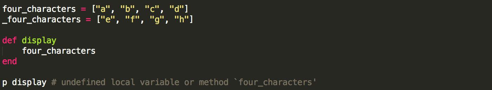
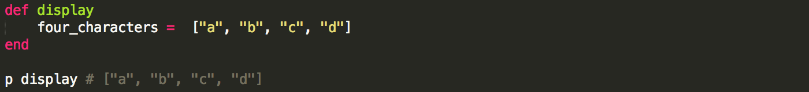
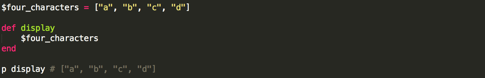
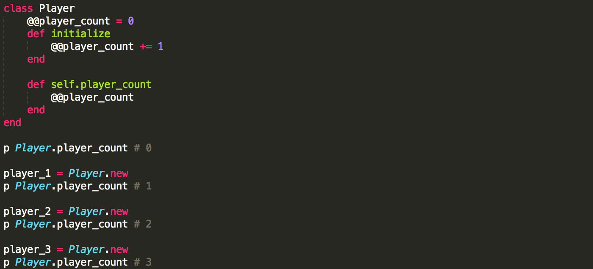
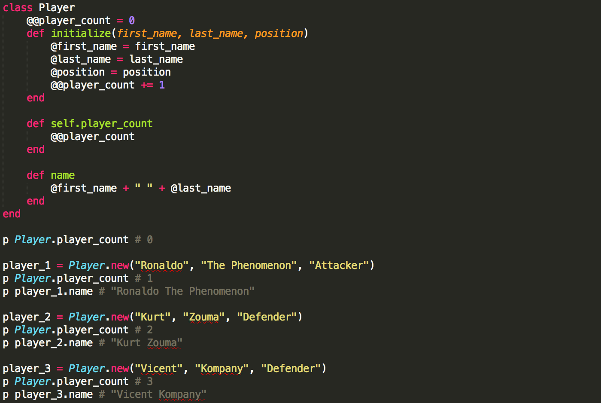

Variable Scope
08/02/2014
What is a variable's scope?
The scope of a variable defines where in a program the variable is accessible. Ruby supports 4 types of variables: local, global, instance, and class variables.
Local variables
Local variables begin with a lower case letter or an underscore and can only be accessed within the construct they are defined in.
Our display method returned an error saying that local variable 'four_characters' is not defined. We just defined four_characters above method display so why the error?
The scope of variables defined within method display starts after "def display" and ends at "end". However, variable "four_characters" is local to method display and different from variable "four_characters" which is defined outside the method even though they share the same name. So to fix the error we need to define variable "four_characters" within display:
 Global variables
Global variables must start with a "$" and are accessible from anywhere in your program.
 Class variables
Class variables start with "@@" and are shared among all instances of a class. So if one instance of a class changes a class variable, the change is reflected across all other instances of the class.
As you can see each new instance of Player changed @@player_count.
Instance variables
Instance variables start with "@" and are similar to class variables except that their scope is limited to an instance of a class.
Each call to player_count refers to a variable (@@player_count) shared across all 3 instances of Player, whereas each call to instance method name refers to a variable (@name) that's unique for each instance.